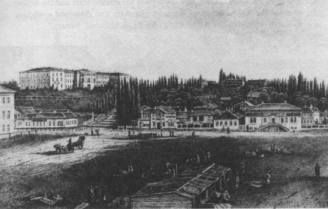
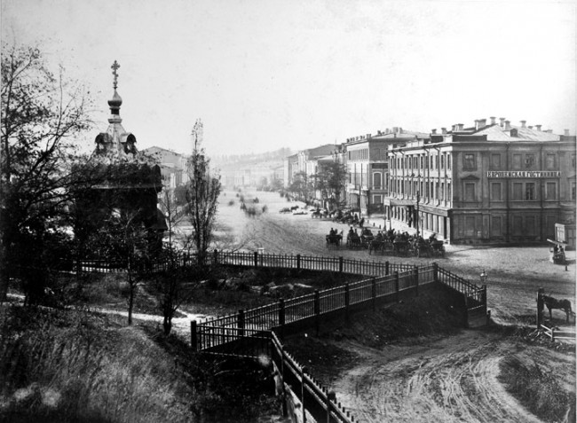
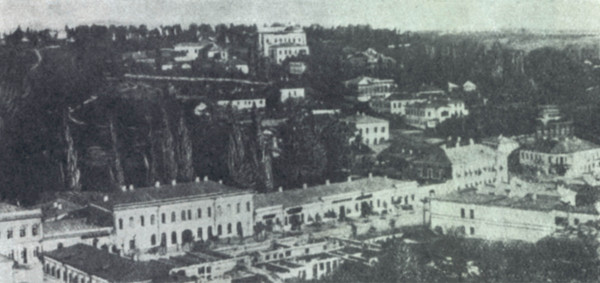
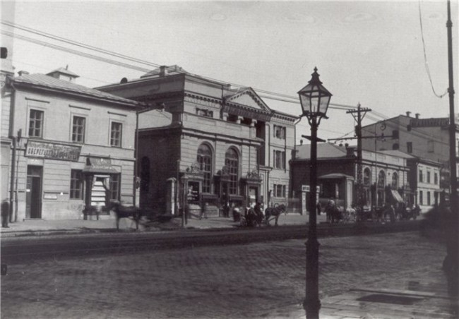
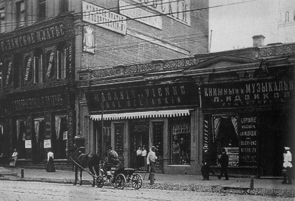
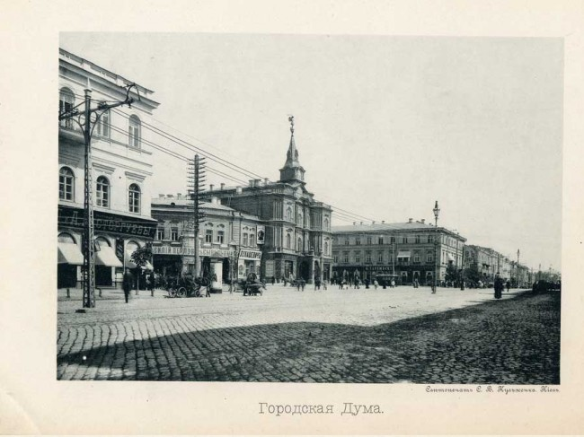

Хрещатик
1851

1860 рік. Хрещатик, вид з Європейської площі

1860

1870-ті рр. Хрещатик, будинок No 26. Колишнє поштове відділенняї

Це 1875 рік. Хрещатик, будинок No 27

1890-ті рр. Вид на Думську площу

Траса фунікулера в ті часи була майже на сорок метрів коротше нинішньої.

Нижня станція в своєму первозданному вигляді. 1928


Під час Другої світової війни фунікулер працював з перебоями. Після звільнення міста підйомник пройшов невеликий відновлювальний ремонт і 27 листопада 1943 був знову запущений в експлуатацію. Ось так сумно виглядала верхня станція в 1943 р.

1944

Нижня станція в післявоєнний період

1950

Фасад верхньої станції в 1950

20 грудня 1958 р нові вагони взяли на борт перших пасажирів

Так виглядав вхід на нижню станцію під час будівництва станції метро “Поштова площа” в середині 70-х


Установка нового вагона К-80 на рейки. Форми нових вагонів дуже схожі на старі К-56

Святкування 90-річчя фунікулера в 1995 р


Після останнього оновлення 2019р.
Назад